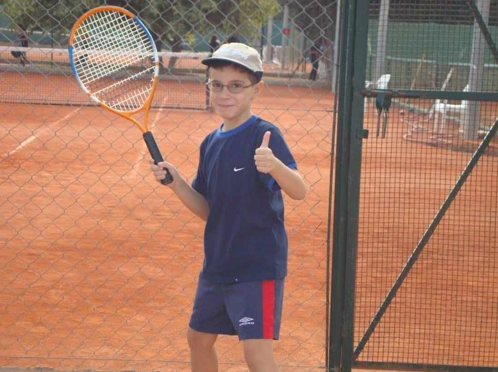
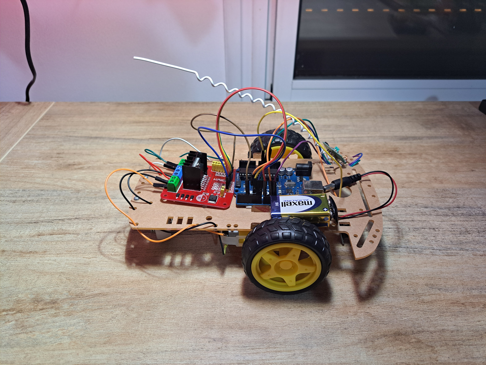
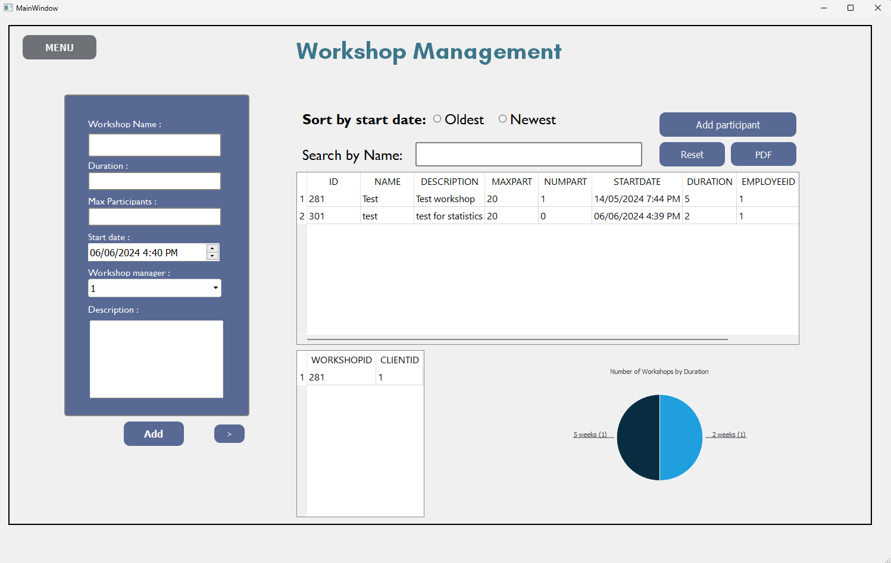
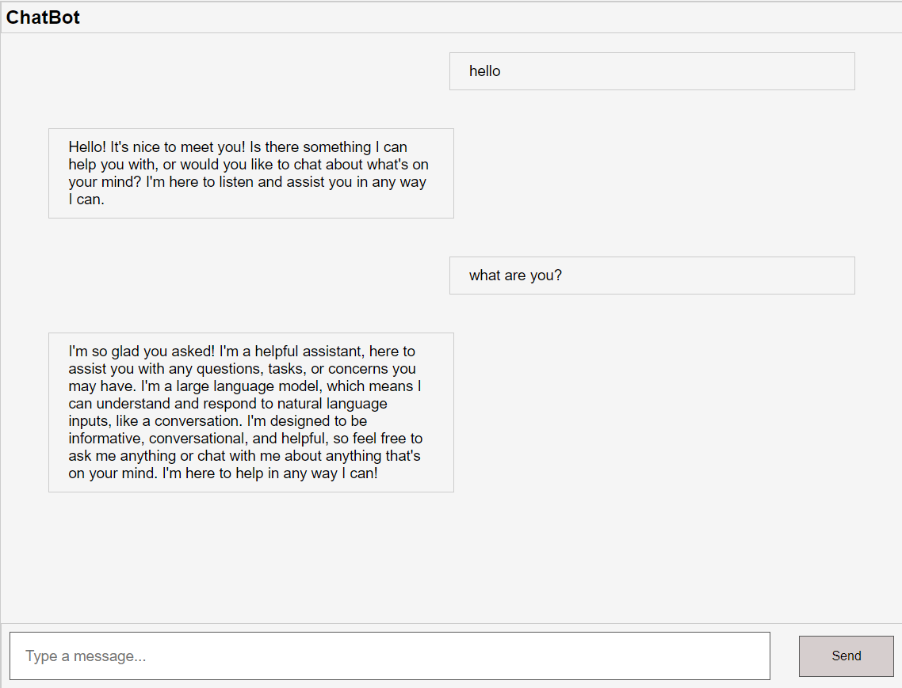
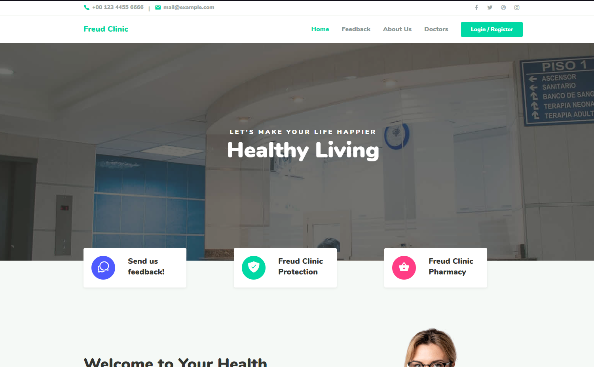
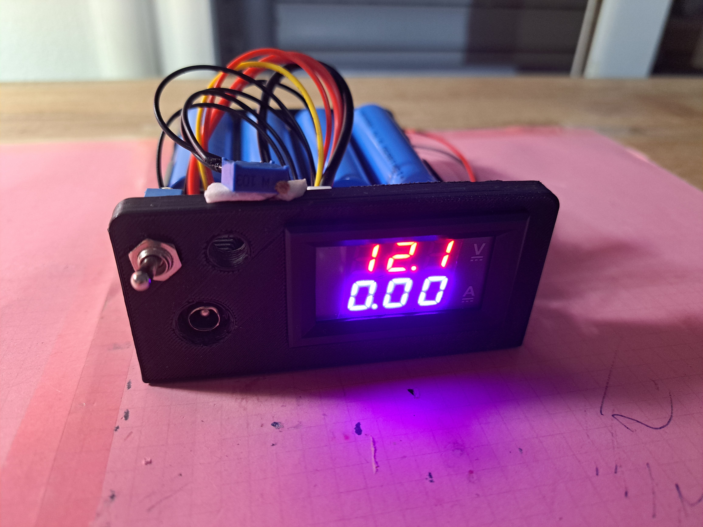
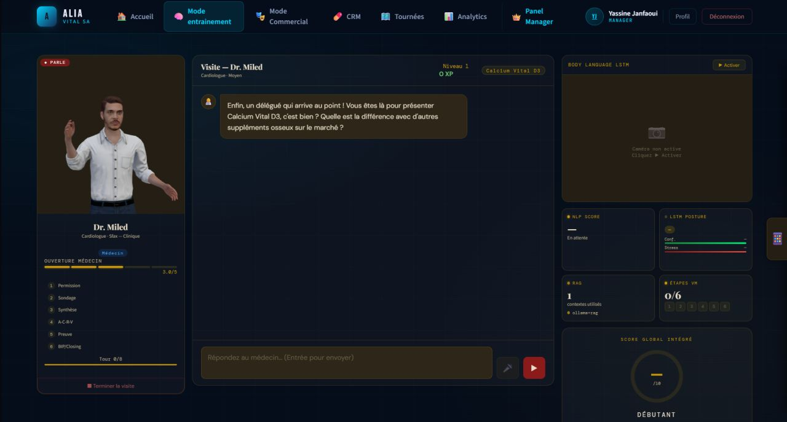

HTML
experienced

Hi! I am
Engineering student and a passionate developer




IT Support & Infrastructure intern at Transcom
Full-Stack / AI Developer intern at VERMEG
Web Developer at Académie de Développement des Compétences
IT Support intern at BIAT

Double degree in engineering, IMT Mines Albi & ESPRIT (2026 – 2028)
Computer Science engineering at ESPRIT (top of the class, 3 years running)
Baccalaureate in Mathematics, with honours (15.35)
I am a computer science engineering student, top of my class, pursuing a double degree between IMT Mines Albi (France) and ESPRIT (Tunisia). I have full-stack development experience (Java, Python, Symfony, JavaScript) and in AI applied to healthcare, gained through internships and projects, and I am used to working in Agile/Scrum teams. I am also passionate about robotics and electronics, with several Arduino-based personal projects.
Tunis, Tunisia
June 2026 – August 2026
Tunis, Tunisia
July 2025 – August 2025
Tunis, Tunisia
September 2024 – April 2026
Tunis, Tunisia
July 2023 – August 2023
Won with
Drugorithm, a lung tumour diagnosis platform from images and symptoms
(Python, TensorFlow, Flask) with a dual doctor/patient portal.
April 2025
Ranked 1st in my class at ESPRIT in the 1st, 2nd and 3rd years of the Computer Science engineering program.
Selected for the double engineering degree between IMT Mines Albi (France) and ESPRIT (Tunisia), 2026 – 2028.
experienced
experienced
Intermediate
Basic
Intermediate
Intermediate
Intermediate
Intermediate
Intermediate
Intermediate
Intermediate
Intermediate
Basic

Radio controlled car using L298 motor driver and 433Mhz radio
transmitter/receiver.
Coded using Arduino IDE.

A management system for a fabrication lab that uses Oracle
databases to View and modify different elements of a fablab
(employees, clients, equipment..etc)
Coded using QT designer, C++ and SQL .

A web chatbot that uses api calls to respond to messages sent by
the user.
Coded using HTML, CSS and Js, uses the GroqCloud API and llama-8b
ai model.

Website for hospital management, including equipment, staff,
users, medications (I dealt with the users and feedback module
alongside making the back office template)
Coded using HTML, CSS, JavaScript, PHP and SQL.

Useful DIY power supply that uses 4 18650 Li-Ion batteries to
provide a stable DC source 3.3V - 15V that helps with various
electronics and robotics projects.

ALIA – AI Avatar for Medical & Pharma.
Integrated data science project at ESPRIT, with partner "Les
Laboratoires VITAL", that trains pharmaceutical reps. It simulates
realistic doctor conversations, scores performance with NLP,
analyses body language in real time and optimises visit routes
keeping all data on-premise.
My part: a hybrid RAG engine (ChromaDB vector search + BM25)
running Llama 3.2 locally via Ollama, over 215 product documents
with sub-900ms responses, and the interactive 3D avatar built
with Three.js.